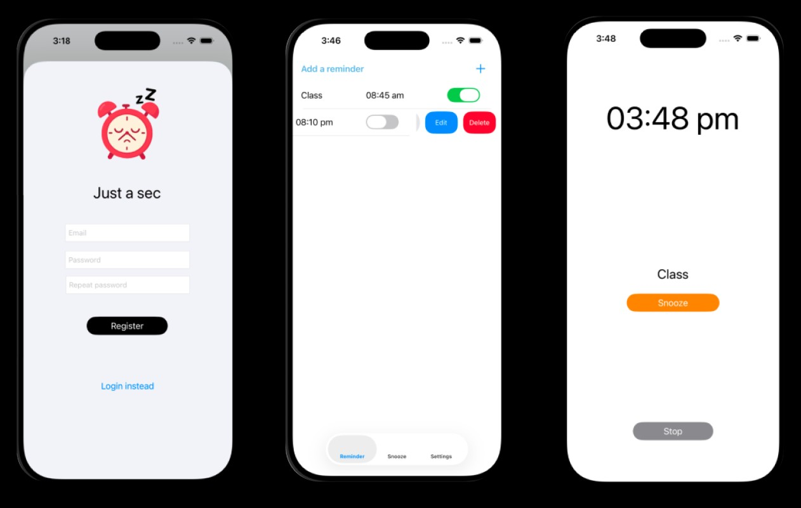

A productivity-focused iOS application designed to combat digital distractions through intentional friction. Built with Swift and the Cocoa Touch framework, the app implements a mandatory delay mechanism to encourage mindful device usage and better habit formation.

A mandatory 5-minute snooze to prevent impulsive device usage.
Robust handling of the app lifecycle to ensure focus sessions aren't interrupted.
A clean, minimal UI focused on reducing digital anxiety.
Developing Just A Sec was a deep dive into the iOS ecosystem and the power of the MVC pattern. I focused on creating a seamless user experience while managing complex data persistence with CoreData. The project taught me how to handle the application lifecycle effectively, ensuring that the app remains reliable and performant even when running in the background. It also solidified my understanding of Human Interface Guidelines and how small design choices can significantly impact user behavior.